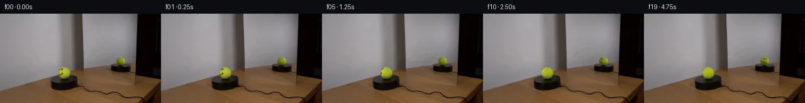
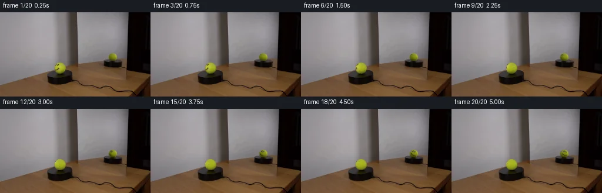
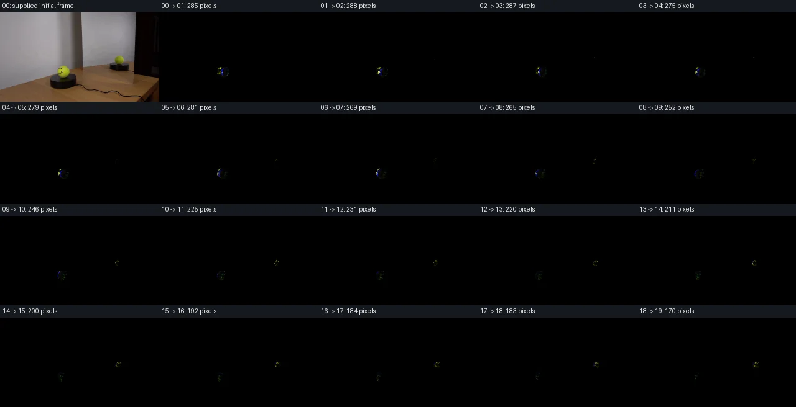

V0 · 初版 · 最终提交
![]()
Observable Generation Trace
把最终像素视频、Harness 冻结的每轮候选、真实工具事件和 Agent 自述放在同一页。可观测证据与模型自述分开标记，避免把“模型说它检查过”误当成真实工具调用。
![首帧]()
Static locked-off single-shot with fixed frame throughout filmed with constant framerate in real-time. The scene shows a realistic scientific demonstration. The scene only contains the described setup and actions. The mirror points towards the tennis ball and initially reflects the side of the tennis ball without a smiley face. The tennis ball with a smiley face sits on the black platform. The tennis ball with a smiley face rotates slowly clockwise on the black platform in front of the mirror.
首帧显示在左侧播放器初始画面。Track 权限、隔离和 tensor 一致性来自 run manifest，而不是 METHOD.md。
默认勾选初版和最终版；可选其他版本一起同步播放。仅检查图更新的连续重复快照已合并，回退旧视频仍保留为一次修订。
Observable events
来源：events.jsonl + run manifest
此 Track 禁止读取输出图片。逐轮预览由外部 Harness 自动冻结，只用于事后审计，生成 Agent 当时看不到这些页面。
Frozen candidates
每张图来自该 round 的真实 00 / 01 / 05 / 10 / 19 帧

pixels 8edb0221a424773e · code 4fbbcff72550ff30
--- previous/generate.py
+++ current/generate.py
@@ -0,0 +1,173 @@
+"""Local, image-conditioned sphere-texture rotation; no external models or engines."""
+from pathlib import Path
+import json
+import numpy as np
+from PIL import Image, ImageDraw
+from scipy.ndimage import map_coordinates, gaussian_filter
+from artifact_io import save
+
+ROOT = Path(__file__).resolve().parent
+SOURCE = np.asarray(Image.open(ROOT / 'first_frame.png').convert('RGB'), dtype=np.float64)
+H, W = SOURCE.shape[:2]
+Y, X = np.mgrid[:H, :W]
+DIRECT = (102.10, 95.35, 9.70, 9.65)
+MIRROR = (191.65, 76.25, 6.85, 6.65)
+ELEVATION = np.deg2rad(12.0)
+ANGLE_STEP = 7.0
+
+def geometry(spec):
+ cx, cy, rx, ry = spec
+ sx, sy = (X-cx)/rx, (cy-Y)/ry
+ r2 = sx*sx + sy*sy
+ sz = np.sqrt(np.maximum(0, 1-r2))
+ return sx, sy, sz, r2
+
+def design(sx, sy, sz):
+ # Smooth lighting can vary with screen position and viewing normal.
+ return np.stack([np.ones_like(sx), sx, sy, sz, sx*sy,
+ sx*sx, sy*sy, sy*sz, sx*sz], axis=-1)
+
+sx, sy, sz, r2 = geometry(DIRECT)
+F = design(sx, sy, sz)
+# Fit unmarked tennis felt. Exclude the face's location, pale seam, and edge.
+face_region = (X >= 93) & (X <= 100) & (Y >= 87) & (Y <= 99)
+seam_region = (X >= 100) & (X <= 106) & (Y >= 89) & (Y <= 102)
+clean = (r2 < .89) & ~face_region & ~seam_region
+clean &= (SOURCE[...,1] > SOURCE[...,0]*1.01) & (SOURCE[...,2] < SOURCE[...,1]*.30)
+coef = np.linalg.lstsq(F[clean], SOURCE[clean], rcond=None)[0]
+base_direct = np.clip(F @ coef, [40, 43, 10], [215, 225, 70])
+# A static low amplitude felt pattern survives after the paint turns away.
+# It is deterministic and uses only the original image's unmarked residuals.
+ratio = np.ones_like(SOURCE)
+body = r2 <= 1.0
+ratio[body] = SOURCE[body] / base_direct[body]
+# Do not interpret silhouette/background contamination as surface pigment.
+# Keep the extracted marker and seam, including their source antialiasing.
+material = (r2 < .965) | (face_region & (r2 <= 1.0))
+ratio[~material] = 1.0
+# Extend to a padded local patch so bilinear lookup near the sphere limb
+# transitions into unmarked albedo rather than sampling the room.
+texbox = (90, 84, 115, 107)
+x0,y0,x1,y1 = texbox
+texture = ratio[y0:y1,x0:x1].copy()
+validity = material[y0:y1,x0:x1].astype(float)
+
+# Reflected shading is directly measured from the initially blank reflection.
+# This preserves its brightness, contact region, blur and original silhouette.
+mx,my,mz,mr2 = geometry(MIRROR)
+base_mirror = SOURCE.copy()
+# Reflection texture is a little softer because it occupies fewer pixels.
+texture_mirror = gaussian_filter(texture, sigma=(.22,.22,0))
+
+
+def sample_material(nx,ny,nz, reflected=False):
+ """Project a material-space normal back into the supplied front view."""
+ c,s = np.cos(ELEVATION), np.sin(ELEVATION)
+ pu = ny*c - nz*s
+ pz = ny*s + nz*c
+ tx = DIRECT[0] + DIRECT[2]*nx - x0
+ ty = DIRECT[1] - DIRECT[3]*pu - y0
+ coords = np.stack([ty,tx])
+ tex = texture_mirror if reflected else texture
+ sampled = np.stack([map_coordinates(tex[...,k], coords, order=1,
+ mode='constant', cval=1.0, prefilter=False) for k in range(3)],-1)
+ # The original material hemisphere ends smoothly at its tangent.
+ visible = np.clip(pz/.075,0,1)
+ v = map_coordinates(validity,coords,order=1,mode='constant',cval=0,prefilter=False)
+ coverage = visible*v
+ sampled = 1 + (sampled-1)*coverage[...,None]
+ return sampled
+
+
+def normal_world(spec, reflection):
+ a,b,d,q = geometry(spec)
+ c,s = np.cos(ELEVATION), np.sin(ELEVATION)
+ if reflection:
+ # A virtual camera behind the ball, with the mirror's parity reversal.
+ return a, c*b+s*d, s*b-c*d, q
… diff truncated; 86 more lines …pixels 8edb0221a424773e · code 01690c55d5bde6bd
--- previous/generate.py
+++ current/generate.py
@@ -1,6 +1,8 @@
"""Local, image-conditioned sphere-texture rotation; no external models or engines."""
from pathlib import Path
import json
+import base64
+import re
import numpy as np
from PIL import Image, ImageDraw
from scipy.ndimage import map_coordinates, gaussian_filter
@@ -133,13 +135,34 @@
for t in range(20):
png = np.asarray(Image.open(ROOT/'frames'/f'{t:02d}.png').convert('RGB'))
assert np.array_equal(png, frames[t]), t
+ # Independently reconstruct the standalone player's delta packets.
+ html = (ROOT/'index.html').read_text()
+ match = re.search(r'const DATA=(.*?);\nfunction unpack',html)
+ assert match is not None
+ data = json.loads(match.group(1))
+ decode = lambda value: np.frombuffer(base64.b64decode(value),dtype='<u4').copy()
+ player = decode(data['first'])
+ assert np.array_equal(player,expected[...,0].reshape(-1))
+ assert len(data['deltas']) == 19
+ for t, packet in enumerate(data['deltas'],1):
+ patch = decode(packet)
+ at = 0
+ while at < len(patch):
+ start,count = map(int,patch[at:at+2])
+ at += 2
+ assert 0 <= start < 144*256 and start+count <= 144*256
+ player[start:start+count] = patch[at:at+count]
+ at += count
+ assert at == len(patch)
+ assert np.array_equal(player,expected[...,t].reshape(-1))
assert np.array_equal(frames[0], SOURCE.astype(np.uint8))
assert np.array_equal(frames[:,~union], np.broadcast_to(frames[0,~union],frames[:,~union].shape))
delta = np.abs(np.diff(frames.astype(np.int16),axis=0))
report = {'shape':list(frames.shape),'dtype':str(frames.dtype),
'tensor_shape':list(packed.shape),'tensor_dtype':str(packed.dtype),
'fps':4,'display_duration_s':5,'first_frame_exact':True,
- 'all_pngs_match_tensor':True,'outside_ball_pixels_unchanged':True,
+ 'all_pngs_match_tensor':True,'player_packets_match_tensor':True,
+ 'outside_ball_pixels_unchanged':True,
'editable_pixels':int(union.sum()),
'changed_pixels_per_transition':np.any(delta>0,axis=-1).sum((1,2)).tolist(),
'mean_absolute_rgb_change_in_balls':delta[:,union].mean((1,2)).round(4).tolist(),Final visual checks
Harness 保存的最终产物


Agent claims
以下文字由生成 Agent 撰写，不等同于工具证据
The supplied first frame is a 256×144 RGB photograph. The camera is fixed, looking slightly downward at a wooden tabletop. A dark circular platform supports a yellow-green tennis ball at approximately (102.1, 95.5), with a projected radius of about 9.6 pixels. Its marker smiley occupies the upper-left portion of the visible ball (roughly x=94–100, y=88–98). A pale curved tennis seam lies toward the ball's right side. The ball remains seated on the platform.
A standing mirror on the right reflects the back of the same setup. The reflected tennis ball is centered at approximately (191.7, 76.3), with radii about (6.8, 6.5) pixels. It initially shows a blank yellow-green side. Reflected lighting is darker and strongest on the upper-right. The reflected platform, the real platform, the table, cable, mirror, wall and shadows remain fixed. Reflection must be coupled to the same rotation, with horizontal parity reversal and a view from the opposite side.
Measurements use the visually supplied initial frame and local numeric color/coordinate checks. Later generated images will be checked through arrays and file decoding only; no image-viewing tools will be used.
The action will be a slow, uniform clockwise rotation about the ball's vertical axis, as seen from above, at 28 degrees per second. Each 0.25-second step advances 7 degrees. A spherical surface map will carry the initial face and seam around the sphere while illumination and silhouette remain fixed. The mirror will show the opposite side of this same surface. There is no translation, bounce, camera motion or added object.
| Frame | Time (s) | Angle (degrees) | Intended visible event |
|---|---|---|---|
| 00 | 0.00 | 0 | Exact input; face on real ball, blank reflection. |
| 01 | 0.25 | 7 | Face and seam begin turning smoothly toward the left. |
| 02 | 0.50 | 14 | Face shifts left and becomes more foreshortened. |
| 03 | 0.75 | 21 | Uniform continuation, fixed sphere center. |
| 04 | 1.00 | 28 | Face approaches the real ball's left limb. |
| 05 | 1.25 | 35 | More face curvature is occluded by the sphere. |
| 06 | 1.50 | 42 | Face continues disappearing around the side. |
| 07 | 1.75 | 49 | Only the trailing portion of the face remains direct. |
| 08 | 2.00 | 56 | Real ball increasingly presents its unmarked side. |
| 09 | 2.25 | 63 | Face passes between the direct and reflected views. |
| 10 | 2.50 | 70 | A small part of the face can begin entering the mirror's limb. |
| 11 | 2.75 | 77 | Reflected face begins growing in visibility. |
| 12 | 3.00 | 84 | Both views use the same surface angle and occlusion. |
| 13 | 3.25 | 91 | Reflection reveals more of the marker face. |
| 14 | 3.50 | 98 | Real ball shows mostly blank fabric and its turning seam. |
| 15 | 3.75 | 105 | Reflected face becomes less foreshortened. |
| 16 | 4.00 | 112 | Mirror shows the smile and eyes more clearly. |
| 17 | 4.25 | 119 | Uniform rotation continues. |
| 18 | 4.50 | 126 | Smile approaches a fuller mirrored presentation. |
| 19 | 4.75 | 133 | End on a clear reflected smile with the real face turned away. |
The 20 frames are displayed at 4 fps, each held for 0.25 seconds, for a five-second clip. The last sampled state is at 4.75 seconds.
This sequence was produced using local Python pixel operations, NumPy, SciPy interpolation, and Pillow. It uses only first_frame.png and prompt.txt as scene inputs. No network, external reference, AI model, rendering engine, or subagent was used.
The original photograph remains the background of every frame. Two estimated spherical projections identify the real ball and its smaller reflection. A smooth nine-term lighting fit from 81 unmarked source pixels estimates the real ball's static shading. Dividing the source ball by that estimate extracts a surface color map containing the original hand-drawn smiley, pale tennis seam, and small felt variations. Unobserved surface is continued as plain felt; no second face is invented.
For each frame, analytic sphere normals are rotated uniformly about the vertical axis. The turn is clockwise as seen from above: 7 degrees per frame, equivalent to 28 degrees per second. Bilinear sampling moves the source surface detail with foreshortening and limb occlusion. The front camera is estimated to sit 12 degrees above the horizontal. The reflected view uses an opposite virtual viewpoint at the same elevation, with horizontal parity reversal. Both views use the same material coordinates and rotation angle. The smaller reflected texture is lightly filtered to account for its reduced size.
Rotated surface contributions are applied as differences from the initial surface contribution. This retains the source's object positions, outlines, lighting, and contact shadows. All pixels outside the two projected balls are copied exactly. The original ball's pale seam rotates with its face. Frame 00 is copied directly from the supplied input, without resampling.
This is an image-conditioned spherical approximation, rather than a reconstruction of the full mirror geometry. The hidden hemisphere, camera elevation, and sphere dimensions are estimated from one photograph. Illumination and silhouettes are held fixed. No generated image was viewed; validation used only local code, array statistics, and file decoding.
generate.py regenerates all outputs deterministically.frames/00.png through frames/19.png are 20 RGB frames of 256×144 pixels.pixels.npz contains pixels, a uint32 array with shape (144, 256, 20), packed as 0xRRGGBB.index.html is a standalone player with all frames embedded as lossless delta packets, running at 4 fps for a five-second display cycle.inspection.png is an eight-frame contact sheet, generated for delivery.transition_check.png contains the initial frame and amplified absolute differences for all 19 transitions, with changed-pixel counts.OBSERVATION.md records initial measurements and the preimplementation 20-frame event plan.verification.json records numeric results.Assertions confirm exact agreement between every PNG and the packed tensor, exact preservation of the initial frame, and exact reconstruction of every frame from the player's delta packets. The editable area is 442 pixels across the two balls; all other pixels remain unchanged. Mean RGB changes in this area range from about 1.6 to 5.0 levels per transition. No clipping occurs inside the real ball's interior. A separate numeric check found that the 22 initially darkest marker pixels had green/shading ratios of 0.25–0.69 in frame 00 and 0.91–1.00 in frame 19, confirming that the original face area becomes nearly unmarked. Reflected dark surface contribution rises from approximately zero to 9.73 pixel-equivalents as the face enters the mirror.
The samples are at t=0.00 through 4.75 seconds, each held for 0.25 seconds. A player loop returns to the supplied initial frame after the five-second clip; the described action itself is a 133-degree partial turn.